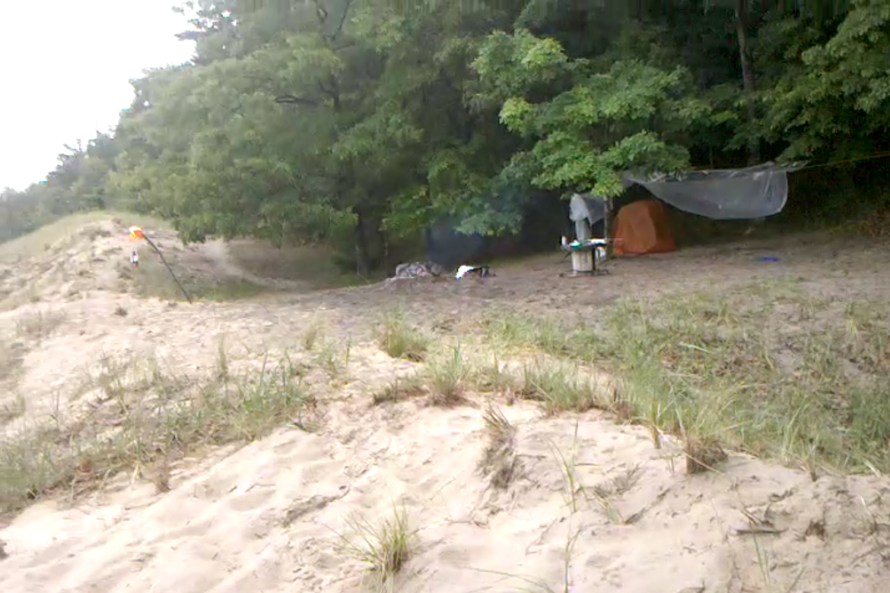

May 9th 2020, 5:48:56 pm EDT
Listen
Each day we must learn,
and what we've forgotten re-lean.
Our life depends on clarity,
our visions must be sharp.
A lesson learned, begets a wisdom.
Two create a kingdom.
Our might comes from knowledge,
and you can't find that in college.
Life is too short to lean in slices,
leave them to their own devices.
You are a powerful being,
you learn fastest on your own.
As few teachers there are,
so there are but a handful of books.
It will be hard work,
to fill all the notebooks.
But your mind is unique, anyway,
there is no substitute for your own way.
At first it will be gibberish,
at last, they will read it feverish.
You must not be tired,
your mind cannot be stressed.
You must resist what they desired,
tell them you can't be hired.
You are not a dime a dozen,
there is no other like you.
You have to tend to your mind,
all the forgotten lessons remind.
There cannot be anyone like you,
learn to reach your own breakthrough.
Set your self free from the silly sting,
you are not just a little thing.
No retreat, no surrender.
You are a meant to become a Great Being.
May 8th 2020, 5:27:06 pm EDT

Listen
Now is the time,
it is always the time.
You are never too old,
you are never too large.
But whoever you are,
You are always too beautiful!
Jogging is a wise teacher,
it teaches bodybuilding.
More importantly, it teaches,
that our bodies are powerful.
But, they do not adapt as quickly,
as our fancies strike us.
There is one fantastic way to jog,
measure how long you can run.
And how long you need to rest,
to run that long again.
Make the jogging number (1 minute)
and the rest number (2 minutes)
your friends for the Spring.
Rest 5 times, jog four,
don't be too hard on yourself.
Jogging is difficult,
because you should dance first.
Dancing and walking,
are lovely at making you a Jogger.
But if you are in a hurry,
as many joggers are,
a bit of Rest & Jog Tango will do.
So, rest, jog, rest jog, rest jog,
rest jog, and rest.
Don't push yourself too hard,
but you have to run each day.
Some days, you can just walk - so as long,
as it is three times longer than your jog.
Above all, be good to yourself,
because, you are beautiful to me.
And do not forget that you can put,
blueberry jam into a huge salad,
to make a new kind of fruit for health nuts.
I know you can do it,
I believe in you, I really do.
May 7th 2020, 9:09:37 pm EDT

Listen
Oh it was cold that morning,
the sudden change came without warning.
While the sunsets are over the sea,
the sunrise, must rise from behind dunes.
There are no dunes taller than these,
they are ancient, born of frozen seas.

The deer were the first to rise,
to them belonged the sunrise.
There is a place where the dunes part,
by some unknown art.

The deers come out,
it is their lake, no doubt.

When the sun finally made it,
the warm air rolled down the dune.
The symphony of the ancient forest,
perfectly in tune.
Then the birds rose,
and their breakfast followed.
Two eagles came by,
to keep an eye from the sky.

My beloved Seagull friend and I rejoiced,
another perfect morning.

(My seagull friend's name is Bob.
I called them all Bob.
I had difficulty telling them apart,
but I sure got their names right.
Seaguls, are the kittens of the sea,
and they are all very mighty.)
May 6th 2020, 10:45:58 pm EDT
Listen
If everyone seems scary,
that's only because scary is all you've ever met.
I've met them too, I saw what they can do.
How sure of themselves, how forward and blind.
But, if you spend your life in hiding,
they will win, and rob you of everything precious.
So rise, begin taking care of yourself,
and begin your search.
Not a search for mere friends,
but a search for The Extraordinary.
It is simple.
My friends.
The only way to find The Extraordinary,
is to become Extraordinary yourself.
If you got hurt before,
then you have already come a long way.
You now hold a gift of Wisdom,
a Foresight that can spare suffering.
No one is to take Love of Life from you,
no one is to rob you of Joy and Laughter.
Grab an audio-book,
get to know the local Museums.
Learn.
May 6th 2020, 10:46:58 pm EDT
Listen
If you don't care about yourself,
People will get scared of you.
Because, if you get hurt,
you will hurt them too.
You have to watch yourself,
be compassionate to yourself.
Ask...
Is working too many hours a day,
helping or harming me?
Are Office Walls,
helping or harming me?
Does loneliness help you?
Or does it harm you?
Same for getting scared,
Does hiding really help you?
Overwork and Office is unhealthy,
take those skills, and build.
Take it outside,
let Nature nurture you.
In her silence,
she will help you remember who you are.
You must learn to treat your body with compassion,
You must learn to take Great Care of our mind.
And please,
make every day count.
We are so beautiful,
such powerful dreamers.
Above All,
Love Yourself.
May 6th 2020, 10:47:58 pm EDT

Listen
My friends, as mighty as we are,
we can only do one thing at a time.
Once you take care to choose the big things well,
the one thing before you...
is what the big thing will depend on,
do it well.
Small things will sneak up on you,
and I am so sorry for that.
It is the job of our Teachers to help us,
but today there are very few.
You have to accept the responsibility,
you must fight for wisdom at all cost.
In the absence of teachers,
you must become your teacher, it is your right.
If you fail to educate yourself,
people will use you.
They will use the best of you,
Your Generosity, Your Kindness, Your Might.
They will pay you less,
and trick you to thank them that you still have the job.
They will replace you with younger people,
come your Golden Age, to save a dollar.
Come a tragedy,
they will use it to make you work harder.
All of this is hard to see,
it brings so much relief and pleasure.
It feels so right to choose,
but you are so much more than a worker.
You must ask, if the path that you are on,
is worthy of the Magnificent Being you are.
You are meant to become a Great Being,
you have to climb to see the Big Things.
Even as a Great Being, my friends,
always look to the Big Things.
Do not waste your precious time,
to achieve that which crumbles.
Look towards real things,
things that really last.

(Images courtesy of Wikipedia, Wanderer above the Sea of Fog, Ozymandias Collossus)
May 6th 2020, 10:48:58 pm EDT
Listen
We must Always wisely choose Maximum over Minimum,
because the minimums will attack our mind and body.
When hoping to live life to the fullest,
we have to choose the big things very carefully.
Health, is an example of a big thing,
everything we do, must stand in support of it.
Time, is a big thing,
everything we do, must count.
We must frequently ask,
"Is this event harming or helping me?"
We must frequently ask,
"Will this matter in six months, or next year?"
We must ask,
"What are the regrets of my older self?"
Because only you can judge yourself,
you must grow in wisdom, and age gracefully.
Do not miss the point of life -
You are meant to become a Great Being.
You are to search and find the Light of Your Life,
and discover a way contribute to Wisdom.